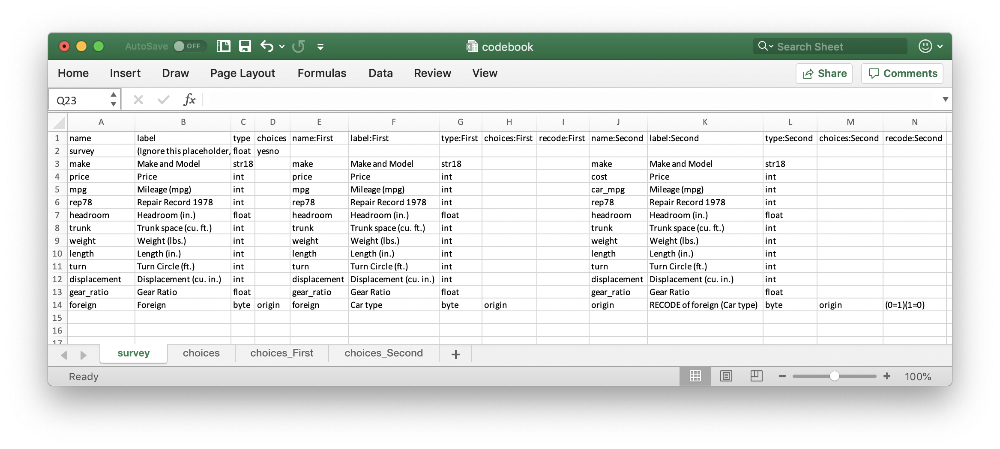

class: center, middle # Research in the Field: ## Data for Development Impact --- # Outline #### Introduction #### Handling data ethically #### Collaborating on code and data #### Evaluating impact through research design #### Sampling, randomization, and power #### Acquiring development data #### Analyzing research data #### Publishing collaborative research (_[Borrowed from myself and some other very bright people...](https://worldbank.github.io/d4di/)_) --- class: center, middle # Introduction --- # 👨🏻🏫 Who am I? My name is Benjamin Daniels. I have worked in large-scale field research on a number of projects over the last ~8 years. This includes classic surveys, novel measurement methods (standardized patients), impact evaluation, MLE-type program support, etc. I am currently a Research Fellow here at _gui<sup>2</sup>de_ at Georgetown. I moved here in September 2019 from the World Bank, where I sat in the research department (DEC), sharing time between DECHD and DIME. **My work:** - Homepage: https://www.benjaminbdaniels.com - Google Scholar: http://bit.ly/bbdaniels-scholar - GitHub: https://github.com/bbdaniels - _Data for Development Impact_ (Book): https://worldbank.github.com/d4di/ - MSIE Training Material: https://osf.io/h4d8y/ - RePEc: https://ideas.repec.org/f/pda505.html --- # 🕵🏻♀️ Why are we talking about **field** research? I assume you all know impact evaluation _theory_ pretty well inside and out. It sounds nice and neat when you get it in a classroom format; the academic works that cover this material also tend to be very "clean". Some examples: - Athey/Imbens: https://pubs.aeaweb.org/doi/pdfplus/10.1257/jep.31.2.3 - Abadie/Cattaneo: https://www.annualreviews.org/doi/abs/10.1146/annurev-economics-080217-053402 - Cunningham: https://scunning.com/mixtape.html Things seem nice and neat when you have these causal models. However it is almost never neat in practice. You will often find that a field coordinator is senior to a research assistant... so think accordingly about your career choices! --- # 💡 Motivation for lecture **Why you should care:** - Presumably you want to make people's lives better, or something like that - Research (including intelligently-done evaluation services) is a popular path - Even if you are not a researcher you will depend on or manage people who are **If you are a research producer:** - _Know_ that things are not as clean as in the books - _Learn_ how to turn close contact with research studies and data into useful insights **If you are a research consumer:** - _Know_ that a lot of people are selling you snake oil - _Learn_ what questions to ask to determine if you are getting high-quality info --- # 🔮 What causes these dynamics? **Who here has been on a field visit?** - Research studies are an _abstraction layer_. - People who are doing field research are translating _information_ into _data_ - Implementers (NGOs, govt's, etc.) usually have lots of _information_ but no _data_. **Close contact with _information_ is needed to transform it to _data_** - In many cases that is staff: research assistants or field coordinators - Principals typically do not have the _time_ to learn a study as closely as they need - Therefore you need to figure out how facts are being systematized or abstracted - This is the first and most challenging task of a research study **Never, ever, take data as "given": creating it is _always_ a "social process"!** The rest of this presentation will talk about some specific steps in this process... --- class: center, middle # Handling data ethically --- # 💽 Handling data ethically **Think of research as a public service** - You are accountable to research _participants_ and research _consumers_ - Typically, some people are asking you to study the lives of some other people - The people whose lives are being studied can _consent_ to letting you observe them, and they typically do so in trust that their information is used securely for the public good **Protect confidence in your work and in research in general** - Three key tools: _reproducibility_, _transparency_, and _credibility_ - Reproducibility: make code and data as public as possible, and let people access it - Transparency: prepare and release detailed documentation of your work - Credibility: show your work so people can evaluate the quality of your design and data collection --- # 🔐 Privacy and security **Handling personally-identifying information is common** - Research data that directly identifies participants is highly sensitive - It is governed by US federal law and has serious consequences for mishandling - Partners in the field (non-researchers especially) do not face the same regulation **You need to be a leader in proper handling of data** - IRB review and approval of processes is essential (messing this up is not fun...) - Ensure that you have secure storage and transfer processes (Box makes this easy) - Don't handle data you don't need, and create masked copies as soon as you can **This also means ensuring that you are _personally_ protected:** - Get yourself a _two-factor authentication_ program and enable it on all accounts (Google Authenticator, Authy, Lastpass) - Get yourself a _password manager_ so you can create secure passwords and share them with others (BitWarden, LastPass) --- class: center, middle # Collaborating on # code and data --- # 🎭 Collaborating on code **It is less and less common that work is done by one person alone in a room** - We have greatly advanced technology; it is not always wise to use it - More important than being fancy is being able to work with others - This especially includes others who have different skill sets than you **The new world is a world of standardization and collaboration** - _Workflows_ are the most important technology we have - Everyone on your team should know what and how to make their contributions - There are lots of work streams out there where you don't need to re-invent the wheel! **The most functional workflows prioritize ease-of-use and documentation** --- # 💡 Workflows to steal **File sharing: three types** - _Sync_: Everyone has the same files all the time - _Version Control_: Not everyone has the same files all the time - _Server Share_: There is only one file, everyone can access it **Documentation and decision-making** - Kanban boards or Glo Timelines: Good for project planning - GitHub Issues: Good for technical and code documentation - Dropbox Paper: Good for management/organization **Matching the method to the task is 95% of the challenge.** - Changing methods is hard further down the road - Changing organization is even harder... - Standardize as best as possible and improve project-by-project - --- # 💾 `ietoolkit`: commands for impact evaluations **Key idea: institutional memory in code** - Collectively DIME has a lot of experience, and DIME Analytics tasks often boil down to: "generate and disseminate institutional memory" - [DIME Wiki](https://dimewiki.worldbank.org) and [our book](https://worldbank.github.io/d4di/) are important resources for institutional memory - But what if we also build institutional memory into the **code** RAs use? - This is the objective of `ietoolkit` (and `iefieldkit`) **Resources** - [Blogpost](https://blogs.worldbank.org/impactevaluations/ie-analytics-introducing-ietoolkit) - [Homepage](https://worldbank.github.io/ietoolkit/) - [GitHub](https://github.com/worldbank/ietoolkit) - [Stata Conference Presentation](https://www.stata.com/meeting/chicago19/slides/chicago19_Bjarkefur.pdf) --- # 💾 Showcase: `iefolder` - This is the flagship command for the suite. It sets up the `DataWork` folder, a standardized project folder structure for reproducible research. - In addition to setting up the `DataWork` folder, iefolder creates master do-files linking to all main folders in the folder structure. - These master do-files are updated whenever more rounds, units of observations, and subfolders are added to the project folder using this command.  --- # 💾 `iefieldkit`: commands for data collection **Key idea: move human tasks out of code** - Data collection is a process that has traditionally suffered from low levels of documentation, standardization, and replicability - These commands automatically output human- _and_ machine-readable spreadsheet documentation as a functional part of the intended workflow - Example of using Stata to bring ideals of standardization and replicability to one of our core tasks that is usually considered less technical **Resources** - [Homepage](https://dimewiki.worldbank.org/iefieldkit) - [GitHub](https://github.com/worldbank/iefieldkit) - [Stata Conference Presentation](https://www.stata.com/meeting/chicago19/slides/chicago19_Daniels.pdf) --- # 💾 Showcase: `iecodebook` - Anyone can write thousands of `rename`, `recode`, and `label` commands. - Nobody wants to, and it is very hard to find errors later. - `iecodebook` enables this to be done for one or more datasets at a time, including making sure value labels harmonize across appending multiple rounds. - **Most importantly**, this is all done in a spreadsheet that anyone can read! In Stata, then, one line: ``` iecodebook append "survey1.dta" "survey2.dta" using "codebook.xlsx" ```  --- class: center, middle # Evaluating impact through research design --- # 👩🏽💻 Evaluating impact through research design **Usually, the research design is left to the PI, but it is very important for you to be familiar with major causal inference methods.** - If you don't understand basic models really well, you won't be able to arrange data properly - This is a major step in the "abstraction" process from information to data - Again, things rarely map perfectly to models, so if you don't understand the model you will make critical mistakes trying to force-fit it to wrong data **You will also be 100% more useful** - The PI does not want you to treat analytical tasks like assignments - If you know your models you can _anticipate_ what the next needs are - They definitely do not want you waiting around to be told what to do - And you will also have the advantage of being able to identify opportunities in the field and in the data that nobody else has noticed yet... --- # 📈 Causal inference models **I'm not going to review these in detail but you should:** - Cross-sectional - Difference-in-differences - Regression discontinuity - Instrumental variables - Matching estimators - Synthetic controls **All of these can be _experimental_ or _quasi-experimental_!** --- class: center, middle # Sampling, randomization, and power --- # 🔎 Sampling **Sampling is how we pick what individuals/units to include in observation** - Has major implications for what we can say, and about _whom_ - There is no such thing as "representative" - There is only "representative of _something_" - The broader that something is, the less detail we will likely have **Information → data abstraction strikes again....** - Is "representative of Country X" even a sensible metric? - How will you average rural and urban together, for example? - How can you even compare or combine two different households...? - Sampling is when you make that first, key abstraction, combining unique individuals into "groups" about which something can be said **Take this seriously, and think about what you want to say something about. Think about how to be specific enough to be credible but not too specific to be useful.** --- # 🎲 Randomization **Randomization is how we pick what individuals/units to include in intervention** - Again, has major implications for what we can claim - _Lots_ of fairness and procedural concerns - People who you want to learn about may not make sense to randomize - Particularly when you have small strata (female-head-of-household farmers...) **Several main methods** - Randomization in the lab (using Stata etc from here in D.C.) - Randomization in the field (using a public method) - Randomization as part of data collection (using a survey tool) **Each method's function has to be balanced with what is being implemented so that the process is fair and valid -- many of these projects involve giving valuable things to people who get lucky...** --- # ⚖️ Power calculations **Power calculations let you determine the best use of limited resources** - Power calculations force you to think about the structure of your study - Don't typically rely on simple models like Stata's `power` command - Do the work and think through the sources of variation in your study **Usually this will show you what is useful complexity and what is not** - People like complicated designs and multi-arm trials - Often they do more harm than good by creating many small studies - Small studies are almost always upwardly biased in effect sizes when significant - Power for a single comparison usually takes ~150 clusters per treatment arm - But to _accurately_ estimate effects or interactions you need 4x that many or more... **In all cases it is important to think about how you are testing multiple outcomes, as these kinds of many-dimensional studies become more common.** --- class: center, middle # Acquiring development data --- # 🧮 Acquiring data **This is where things tend to get messy!** **Major questions:** - Where is data coming from? - Who owns data? - Who has other rights over information? **Major methods:** - Surveys (obviously) - Business records and "big data" - Government records **Key question: what is _data_?** You are going to get a lot of things that _look like_ data, but many of these things will only be _information_. (Sound familiar?) --- # 🔏 Data ownership **Who owns data?** - The default is not always clear, and can vary by jurisdiction - Can be the data collector, including survey firm or government partner - Local laws (GDPR, Common Rule) can give rights to people who the data is about - If someone else is collecting or giving data, make sure ownership is clear **Whether or not you own data, make sure usage/licensing considers:** - Use for a particular project - Use beyond that project (general research) - Data storage, security, and retention - Publication or release of data - Ownership of derived or constructed datasets **Clarity is always best, and agreement language need not be hyper-legalistic!** [Here are lots of public resources and standard licenses and template agreements.](http://researchdata.ox.ac.uk/home/sharing-your-data/rights-licensing/) --- # 👩👧👦 Collecting survey data **The "classic" method for doing a research study** - Targets the people you are interested in - Asks the questions you are interested in - Full control over sampling and follow-up **Still, doing surveys is hard** - The workload during fieldwork is really intense - You need to have a lot of groundwork done before "going to field" - There are always problems... **Three stages of preparation: academic, technical, and field** - Academic prep is making sure your questions and samples are right - Technical prep is making sure your tools and methods are ready - Field prep is making sure your people are ready - Think of the Iowa Caucuses... all can fail! --- # 📲 Electronic surveys **Most surveys these days are "computer-assisted personal interviews" (CAPI)** - ODK is the biggest class, of which SurveyCTO is one of the most popular **Academic preparation** - Design the survey on paper and complete sampling and power calculations - Pilot the survey for _content_ so you know it works smoothly **Technical preparation** - Translate the survey to mobile form - Ensure the results are ready-to-use in statistical software ([`ietestform`](https://dimewiki.worldbank.org/wiki/ietestform)) **Field preparation** - Train all enumerators on digital data entry and pilot the elctronic survey - Set up back-checks, data validation, and high-frequency checks ([`ieduplicates`](https://dimewiki.worldbank.org/wiki/ieduplicates)) **Only then are you ready to go to field...** --- # 🔒 Data security redux **We mentioned this briefly earlier, time for more details!** - Strong, unique passwords are a _must-have_ for all services - Get set up with two-factor authentication and password management **Now you must make sure your data is _encrypted_** - Most services take care of "encryption in transit" (to & from servers) - But few will "encrypt at rest" (when they are on servers) **What do you have to do?** - Encryption at rest means that nobody can _read_ the file contents without a _key_ - If you lose the key, you lose the data - But if anyone else can read the data, you are violating your IRB... - Lots of tools/workflows to make this easy and safe - Not going to give details right now, as it depends a lot on your software choice --- class: center, middle # Analyzing data --- # 👩🏾💻 Analyzing data **Four "meta" tasks in data analysis** - Organizing your folder structures - Breaking down your workflows - Writing master scripts - Version-controlling code and outputs **One "meta-meta" task in data analysis** - **Do not** treat any single task as "something to get done" - Make sure you _learn and grow_ from every task - Presumably you want to do them again... - And, presumably, you want to become more senior... - The way to do this is to _understand and routinize_ tasks, at the micro-micro level - This will let you know if someone who reports to you is doing it right **Nothing is too minor for you to take seriously. If you come to my office you will see me searching individual records and re-writing individual tables by hand: checking for spacing, numbering, coloring, picking fonts, etc...** **This is the best signal of quality and effort you have!** --- # 🧙🏼♂️ Organizing data analysis **Organize folder structures** - I highlighted `iefolder` earlier: this is what DIME uses in every project - Each "data source" gets its own intake and cleaning workflow - Then each analysis task gets its own construction and analysis workflow - You should have a "standard" folder structure for everything **Break down workflows** - Intake: Structure and de-identify data so it can be shared and unencrypted - No new variables, so this can be set up at the survey creation stage - Cleaning: Correct any field errors, identify unique IDs, flatten rosters - _Perfect_ labeling and documentation in Stata-compatible English - Construction: Create adjusted and derived indicators, combined datasets, etc. - No limit on the number of constructed datasets, as long as well-documented - Analysis: Create outputs _only_, no new variables or recombinations of data - Go back-and-forth between this and construction as you need things --- # 🧹 Tidying your workflow **Write master scripts** - Master scripts serve as a code map for your project - They are not enough, of course: provide a `README.md` file also - Do not produce do-files that don't run linearly - Use as many do-files as you need to keep tasks "modular" or "atomic" - One per exhibit (table/figure) is just fine! - Use master scripts to set global settings and model oprtion (controls etc.) **Version-control code and outputs** - Eliminate clutter: keep only working versions of code you want - Delete code that is not in use "right now" indiscriminately - Manage your workflows and histories without entangling it in the work itself - No information in file names and no "run this, then that..." **You always have time to tidy up, it is just like "doing the dishes as you cook".** **Except in this case you have a sink of infinite size and it will get really ugly!** --- class: center, middle # Writing up results --- # 📝 Writing up results **Creating good-looking outputs** - Learn better image formats (PDF, PNG, EPS) and think about [design](http://socviz.co) ([Stata](https://graykimbrough.github.io/uncluttered-stata-graphs/)) - Tables are a bit harder: [here's some tips](https://github.com/bbdaniels/stata-tables) - Again, attention to detail: [checklist](https://dimewiki.worldbank.org/wiki/Checklist:_Submit_Table) **Using dynamic documents** - Don't copy-and-paste outputs into results documentation - When results are updated, they should be pulled right into your publication - Gold standard: LaTeX (and online implementations like Overleaf) - Other methods: Dropbox Paper, React.js (this slideshow), GitHub Readme **Preparing a replication package** - Replication package has code, data, and documentation ready-to-run - [AEA policy](https://aeadataeditor.github.io/aea-de-guidance/) is the current standard for Econ publications - If you have worked the way I'm telling you, this will be _easy_ --- class: center, middle # Thank you!